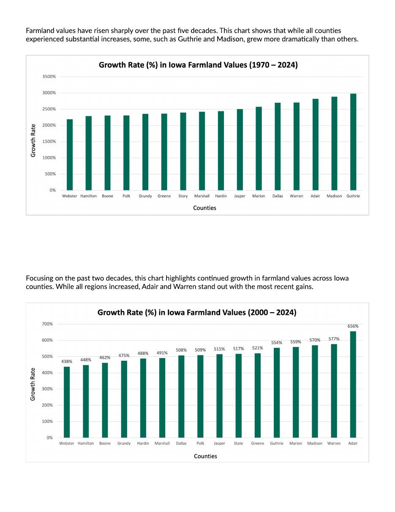
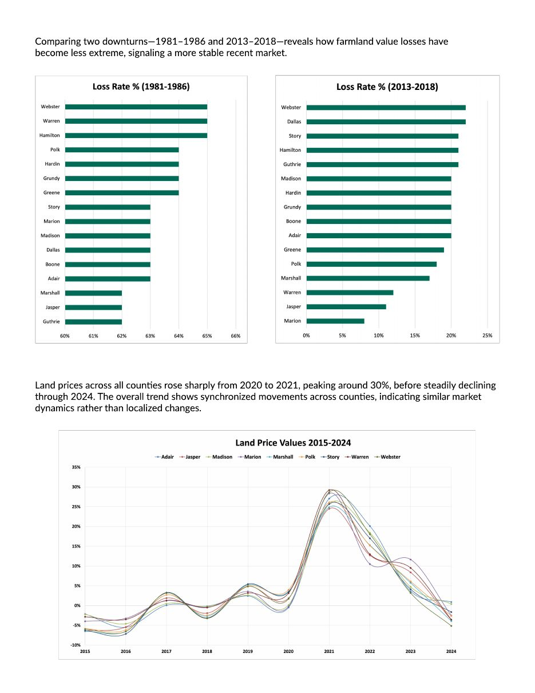
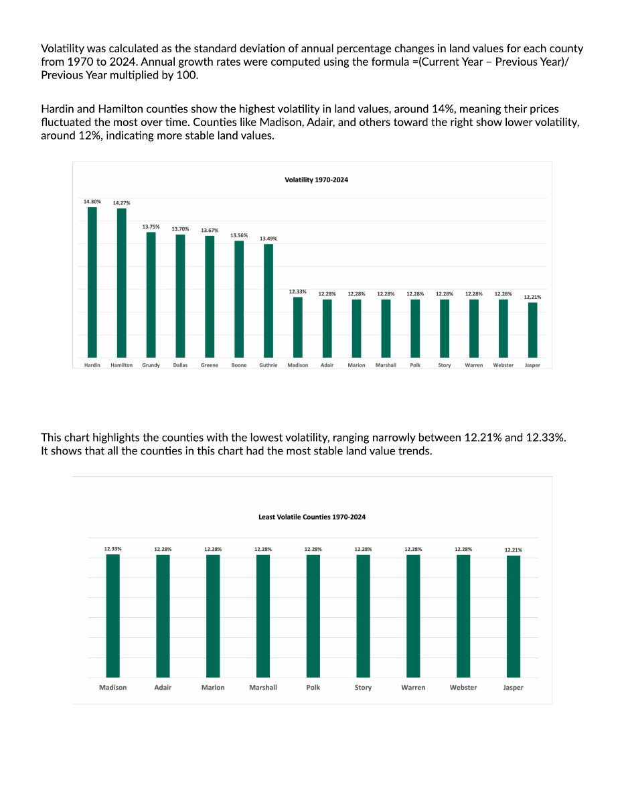

Iowa farmland values: a data display
A four-page data story on farmland values in 16 central Iowa counties from 1970 to 2024, designed as an investor report.
- Context
- Graduate coursework, Iowa State, 2026
- My role
- Co-designed the report and charts with a classmate
- Data
- County land values, 1970 to 2024
- Charts
- Choropleth map, bar charts, line chart
The brief
Starting from a spreadsheet of county land values, we designed a short report for “Heartland Investment Associates” that answers the questions an investor would ask: where values grew most, how they behaved in downturns, how they moved recently and which counties are most stable.
Design approach
- Every chart has a one- or two-sentence takeaway above it, so the reader knows what to look for before reading the chart.
- One green hue across the whole report, with shades on the map showing average annual growth.
- Chart types matched to the question: a map for geography, sorted bars for ranking, paired bars for comparing two downturns, and lines for change over time.
- The volatility page explains how the measure was calculated in plain terms.






